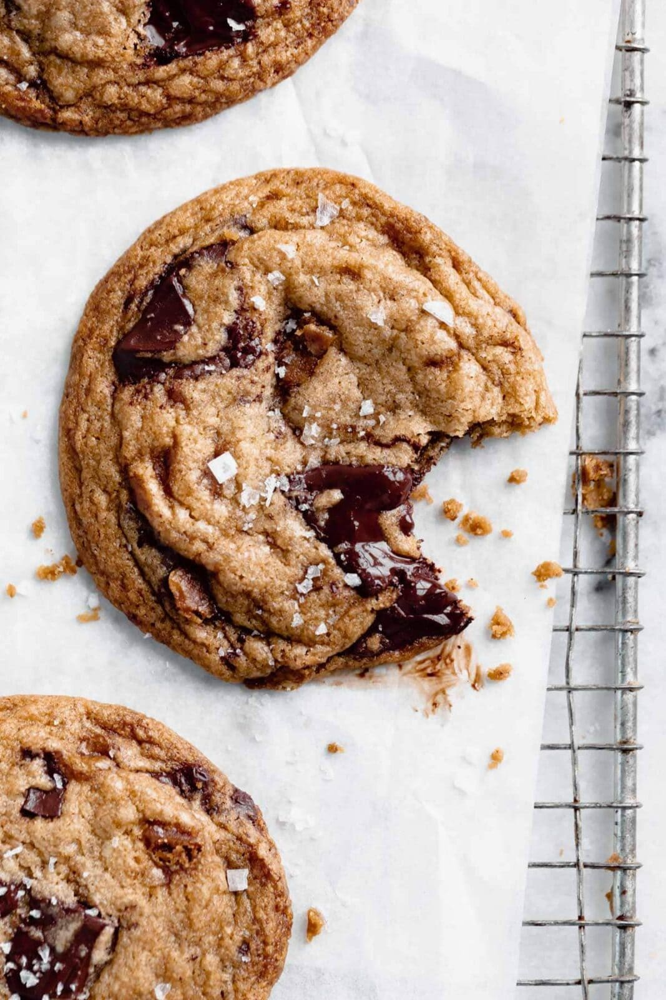

Chef: Alison
Brown butter chocolate chip cookies with crunchy Skor toffee pieces.

| Amount | Ingredient |
|---|---|
| 1 cup (227 g) | Unsalted butter |
| 2 cups (250 g) | All-purpose flour |
| 1 teaspoon | Baking soda |
| 1/2 teaspoon | Morton kosher salt |
| 1 cup packed (215 g) | Dark brown sugar |
| 1/3 cup (73 g) | Granulated sugar |
| 2 large | Eggs, at room temperature |
| 2 teaspoons | Vanilla extract |
| 2 bars (80 g total) | Skor bars, chopped |
| 1 1/2 cups (216 g) | Bittersweet chocolate wafers |
| A sprinkle | Flaky sea salt for topping |